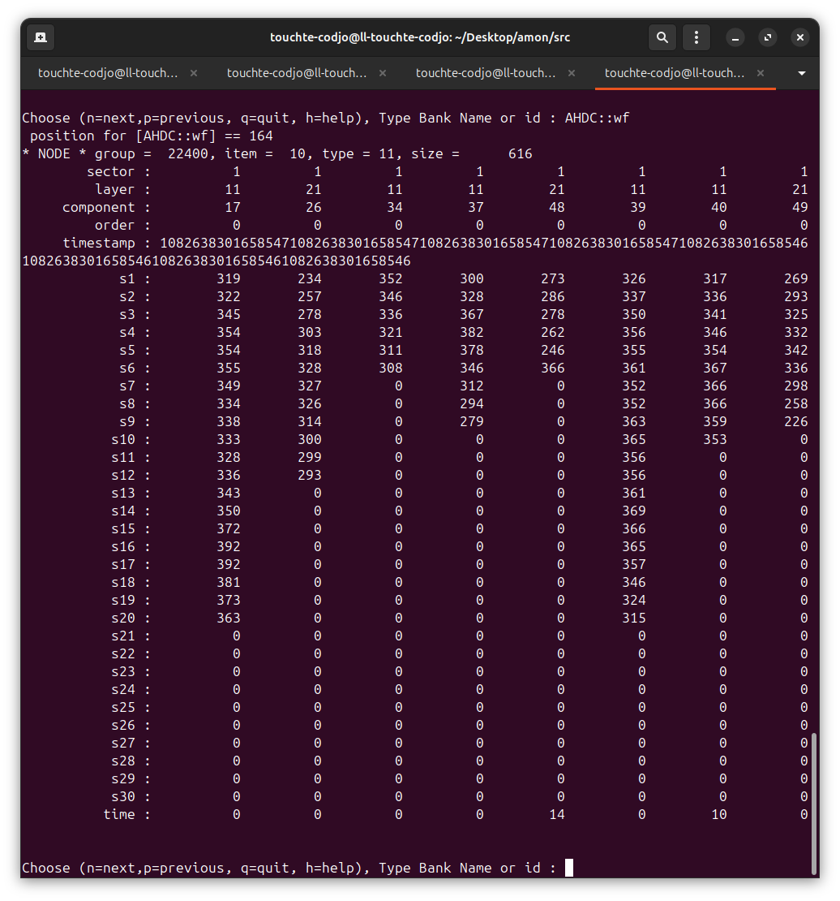

We have a time parameter in the AHDC::wf bank
Lognumber 37.
Submitted on Thu, 07 Aug 2025 - 12:34:10 CEST
Marker: real data
Send to:
This time is expressed in terms of bin numbers.
To be kept in mind.
Look at the zero suppression notes (attachment n° 2). We work in TPC mode.
To be discussed later...
Attachments (2)
1.

2.